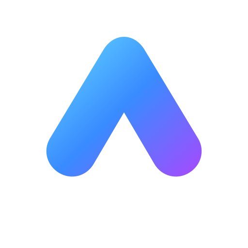
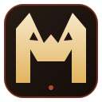

01
Dasar Jaringan Komputer
Jaringan komputer menghubungkan dua atau lebih perangkat agar dapat bertukar data dan berbagi sumber daya.
LANWANPerangkat jaringan

Loading...
NekoSelamat datang di Neko, media belajar interaktif untuk mengenal jaringan komputer melalui materi, simulasi, latihan, dan game edukatif.
Klaim XP gratis setiap hari. Jaga streak untuk mendapat hadiah terbesar pada hari ke-7.
Pilih pengalaman belajar yang sesuai dengan tantanganmu.
Media pembelajaran TJKT oleh anggota berikut.
Neko adalah media pembelajaran interaktif yang dirancang untuk membantu siswa memahami dasar jaringan komputer lewat penjelasan, simulasi, kuis, dan permainan edukatif.
Pelajari konsep, coba simulasi, lalu evaluasi pemahaman melalui kuis.
Membuat pembelajaran TJKT lebih menarik, mudah dipahami, dan mendorong siswa aktif mencoba.
Simulasi VLAN, kalkulator subnet, diagnosis gangguan, kuis, arena game, dan sistem XP untuk motivasi belajar.
Siswa Teknik Jaringan Komputer dan Telekomunikasi yang ingin mengulang konsep dasar jaringan.
Kelompok 1 — Ivander, Muh. Hadit Rafanizam, Muh. Fikron Ainun Najib dan Akhsan Jauhar Santoso.
Pilih materi untuk membaca ringkasan dan lanjutkan dengan simulasi di Neko.
Jaringan komputer menghubungkan dua atau lebih perangkat agar dapat bertukar data dan berbagi sumber daya.
Alamat IP mengidentifikasi perangkat pada jaringan. Subnetting membagi jaringan menjadi beberapa jaringan yang lebih kecil.
VLAN membagi satu jaringan switch menjadi beberapa broadcast domain secara logis. Komunikasi lintas VLAN membutuhkan routing Layer 3.
Periksa gejala, kumpulkan bukti, uji dugaan, lakukan perbaikan, lalu verifikasi hasilnya.
Port membantu sistem mengarahkan komunikasi ke layanan yang sesuai. Contoh: HTTP 80, HTTPS 443, SSH 22, dan DNS 53.
Uji pemahaman dasar jaringan melalui 35 soal pilihan ganda dan dapatkan XP.
Halaman informasi untuk mengenal pembuat dan menyampaikan masukan terkait media pembelajaran.
Jika menemukan materi yang perlu diperbaiki, catat topik dan bagian yang dimaksud lalu sampaikan kepada kelompok atau guru pembimbing secara langsung.
Nama: Neko
Developer: Ivander
Kelas: XI TJKT 2
Kelompok: Kelompok 1
Tantangan interaktif untuk teknisi jaringan. Mainkan, kumpulkan XP, dan buktikan kemampuanmu!
Ketuk kabel sesuai urutan pin 1 sampai 8. Waktu mulai berjalan saat ketukan pertama.
Balik dua kartu untuk mencocokkan nomor port dengan nama layanannya.
Jawab sebanyak mungkin dalam 30 detik. Capai 5 jawaban benar untuk mendapat XP.
Pilih layer OSI yang paling tepat untuk setiap situasi. Jawaban benar menambah skor.
Baca gejala, lalu pilih pemeriksaan atau solusi yang paling masuk akal.
Bantu paket dari PC menuju server. Pilih perangkat jaringan secara berurutan.
Satu perangkat untuk membagikan peran rahasia secara bergantian. Setelah semua melihat peran, simpan perangkat saat memberi clue dan berdiskusi.
Pilih dua perangkat, atur VLAN, lalu amati apakah paket dapat melewati switch atau perlu routing Layer 3.
VLAN memisahkan satu switch menjadi beberapa broadcast domain. Perangkat dalam VLAN berbeda perlu router Layer 3 agar dapat bertukar paket.
Geser prefix dan lihat bit jaringan (terang) dan bit host (redup) berubah.
Lab TJKT butuh 50 host dalam satu subnet. Prefix terbesar (subnet terkecil) yang masih cukup adalah?
Rumus: host usable = 2(32 − prefix) − 2. Dua alamat dipakai untuk network dan broadcast.
Jalankan pemeriksaan untuk mengumpulkan bukti, lalu pilih akar masalah.
Satu soal per layar. Jawaban benar berturut-turut memberi bonus.
Empat insiden jaringan di lingkungan sekolah. Baca gejala, pilih langkah terbaik, dan pelajari alasan teknis di balik keputusanmu.
Pilih perangkat sumber dan tujuan, lalu jalankan uji paket. Ini simulasi pembelajaran, bukan akses ke jaringan sekolah yang sebenarnya.
Petunjuk penggunaan untuk siswa, guru, dan angkatan berikutnya.
Tips: baca penjelasan setelah menjawab agar memahami alasan teknisnya, bukan hanya mengejar XP.
Catatan: file HTML offline tidak otomatis menjadi APK Android. Untuk APK native diperlukan proses pembungkusan/build terpisah.
Mulai dari konsep dasar perangkat dan media transmisi, lanjut ke IP addressing, switching, routing, layanan jaringan, sistem operasi, keamanan, lalu praktik troubleshooting. Selalu lakukan praktik hanya pada perangkat atau lab yang memang diizinkan.
Selesaikan materi, tantangan teori, dan aktivitas praktik. Progres tersimpan pada browser/perangkat ini.
Mulai dari misi pertama.
Setiap misi berisi ringkasan, aktivitas, dan kuis yang perlu diselesaikan.
Guru membuat room dan membagikan ID kepada siswa. Jawaban, skor, dan reaksi disinkronkan melalui server selama sesi berlangsung.
Room memerlukan server Neko yang sedang aktif dan dapat dijangkau semua peserta. Room hanya tersimpan di memori server; restart server akan menghapus sesi.
ID room
Guru dapat memulai kuis setelah peserta bergabung.
Masukkan nama yang ingin dicetak pada sertifikat. Gunakan nama asli untuk kebutuhan sekolah, atau nama pilihan jika hanya untuk koleksi pribadi.
Sertifikat penyelesaian 10 misi pembelajaran Neko TJKT.
Penghargaan hasil evaluasi teori dan proyek praktik dengan standar lebih tinggi.
Rancang jaringan kecil untuk laboratorium sekolah. Isi ringkasan dan centang bukti yang sudah kamu siapkan. Penilaian ini tersimpan lokal; mintalah guru memeriksa hasil praktik. Konfirmasi guru dicatat secara lokal dan bukan autentikasi aman karena aplikasi ini tidak memakai server.
Cari materi, permainan, halaman, atau tema warna.
Jawaban belajar memakai materi lokal; chat tidak disimpan.